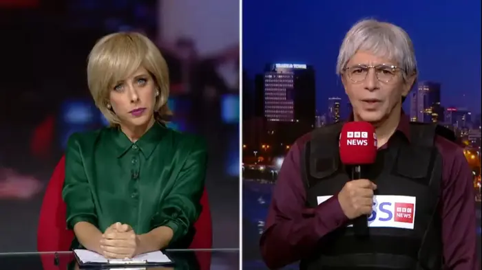

5:10 · 1 OPERA
The THREE questions the BBC NEVER asks the Palestinians.
Il filo del discorso
Un commentatore che si presenta come guida turistica contesta il modo in cui la BBC racconta la guerra fra Israele e Hamas. La sua accusa parte da tre domande che, secondo lui, l’emittente eviterebbe di rivolgere ai palestinesi: il sostegno a Hamas, l’accettazione di uno Stato palestinese accanto a Israele e il giudizio sull’attacco del 7 ottobre.
Leggi la sintesi completaRiduci la sintesi
Il narratore sostiene che risposte scomode comprometterebbero il ritratto dei palestinesi come vittime innocenti; attribuisce quindi questa selezione a una scelta deliberata della BBC. Il video non presenta però una ricognizione sistematica delle interviste né un sondaggio a sostegno delle proprie generalizzazioni. Nella parte centrale il commentatore attacca Mahmoud Abbas e contrappone la propria rappresentazione della società israeliana a quella dei paesi musulmani. Torna poi alla lingua giornalistica confrontando due titoli su episodi del giugno 2023: in uno sottolinea il ruolo attivo dei coloni israeliani, nell’altro la forma passiva usata per la morte di quattro israeliani. Da questa differenza ricava un giudizio sull’orientamento dell’emittente. Si tratta della sua interpretazione polemica: la selezione dei titoli, il testo degli articoli e la successione dei loro aggiornamenti richiedono controlli distinti. La conclusione introduce un estratto di Eretz Nehederet che parodizza una conduttrice e un corrispondente della BBC, facendo loro trattare Hamas come fonte indiscutibilmente credibile. Il narratore approva lo sketch e invita a condividere il video soprattutto nel Regno Unito. La satira esprime una critica dell’informazione; non costituisce una registrazione giornalistica autentica o una prova autonoma delle intenzioni della BBC. La scheda distingue inoltre palestinesi, Hamas e autorità politiche: né identità religiosa né opinioni individuali autorizzano colpe collettive o eliminano la protezione dovuta ai civili.
I libri nel discorso

הסברה מול התקשורת הזרה (Eretz Nehederet, sketch sui media stranieri)
Identificazione probabile
Note sul riferimento
Fotogramma satirico Keshet 12, non servizio BBC reale o copertina: Fotogramma dello sketch BBC di Eretz Nehederet, Keshet 12
Fotogramma autentico del primo sketch BBC, ripubblicato da Walla nel resoconto del 6 novembre 2023 con credito Keshet 12. Il testo distingue lo sketch già virale dal nuovo episodio del 5 novembre; identità e data del segmento originario del 25 ottobre 2023 sono riscontrate separatamente nel catalogo primario Mako. Non copertina, locandina o scena giornalistica reale. Non è lo sketch Sinwar del 14 novembre; l’immagine non è presentata come fotogramma estratto dalla specifica copia del video qui schedato.
Riferimento ricavato dalla trascrizione automatica.